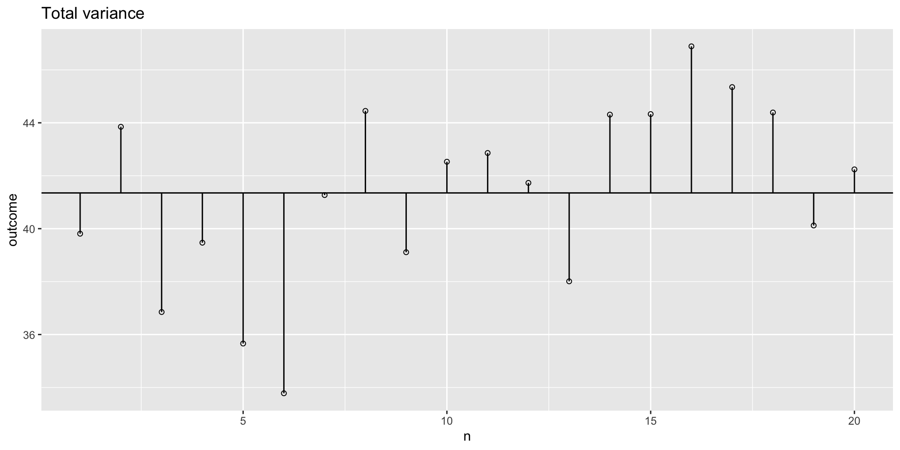
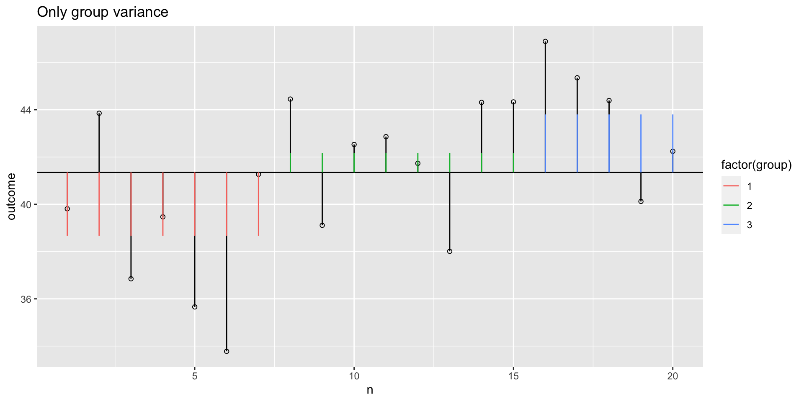
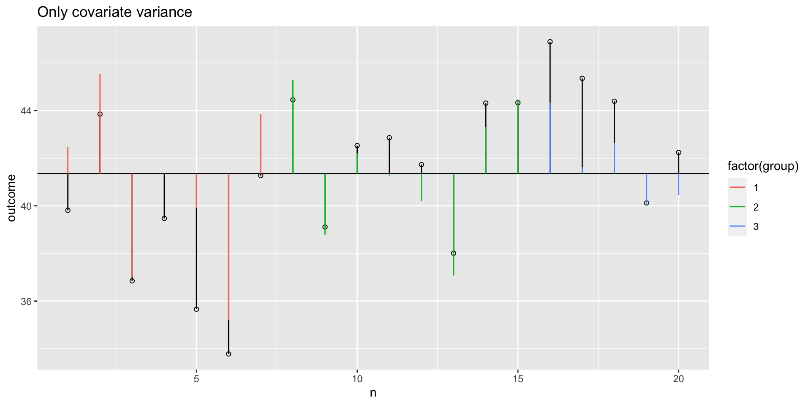
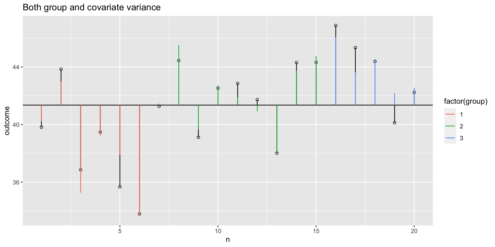
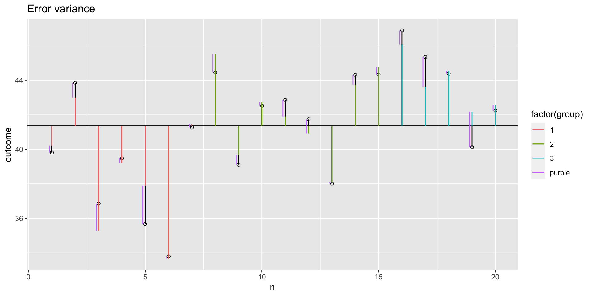
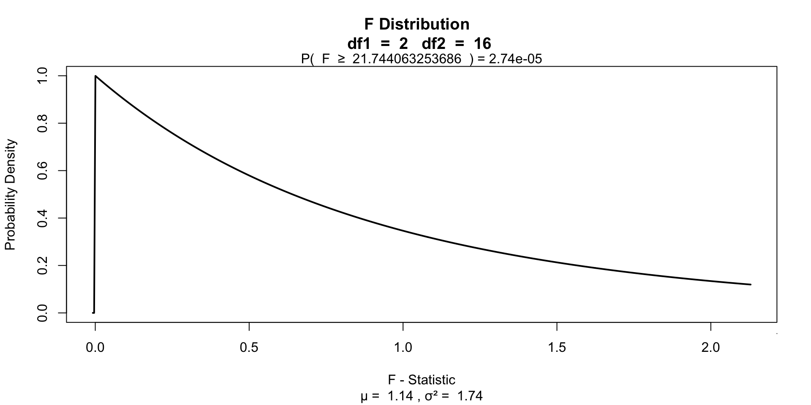
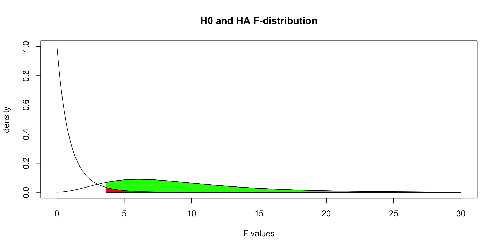

ANCOVA
Klinkenberg
University of Amsterdam
12 oct 2022
ANCOVA
ANCOVA
Analysis of covariance (ANCOVA) is a general linear model which blends ANOVA and regression. ANCOVA evaluates whether population means of a dependent variable (DV) are equal across levels of a categorical independent variable (IV) often called a treatment, while statistically controlling for the effects of other continuous variables that are not of primary interest, known as covariates (CV).
ANCOVA
Determine main effect while correcting for covariate
- 1 dependent variable
- 1 or more independent variables
- 1 or more covariates
A covariate is a variable can be a confounding variable biasing your results. By adding a covariate we reduce error/residual in the model.
Assumptions
- Same as ANOVA
- Independence of the covariate and treatment effect §12.3.1.
- No difference on ANOVA with covar and independent variable
- Matching experimental groups on the covariate
- Homogeneity of regression slopes §12.3.2.
- Visual: scatterplot dep var * covar per condition
- Testing: interaction indep. var * covar
Data example
We want to test the difference in national extraversion but want to controll for openness to experience.
- Dependent variable: Extraversion
- Independent variabele: Nationality
- Dutch
- German
- Belgian
- Covariate: Openness to experience
Simulate data
# Simulate data
n = 20
k = 3
group = round(runif(n,1,k),0)
mu.covar = 8
sigma.covar = 1
covar = round(rnorm(n,mu.covar,sigma.covar),2)
# Create dummy variables
dummy.1 <- ifelse(group == 2, 1, 0)
dummy.2 <- ifelse(group == 3, 1, 0)
# Set parameters
b.0 = 15 # initial value for group 1
b.1 = 3 # difference between group 1 and 2
b.2 = 4 # difference between group 1 and 3
b.3 = 3 # Weight for covariate
# Create error
error = rnorm(n,0,1)Define the model
\({outcome} = {model} + {error}\) \({model} = {indvar} + {covariate} = {nationality} + {openness}\)
Formal model
\(b_0 + b_1 {dummy}_1 + b_2 {dummy}_2 + b_3 covar\)
Dummies
The data
Group means
Model fit no covar
What are the beta coëfficients based on the data without the covariate?
Call:
lm(formula = outcome ~ factor(group), data = data)
Coefficients:
(Intercept) factor(group)2 factor(group)3
38.670 3.496 5.128 factor(group)2 factor(group)3
42.16625 43.79800 \({Dutch} = 38.67 \> {German} = 42.16625 \> {Belgian} = 43.798\)
Model fit only covar
What is the weight of only the covariate?
Model fit with covar
Call:
lm(formula = outcome ~ factor(group) + covar, data = data)
Coefficients:
(Intercept) factor(group)2 factor(group)3 covar
15.965 2.769 4.181 2.881 factor(group)2 factor(group)3
18.73401 20.14609 \({Dutch} = 15.96 \> {German} = 18.73 \> {Belgian} = 20.14\)
Total variance
What is the total variance
\({MS}_{total} = s^2_{outcome} = \frac{{SS}_{outcome}}{{df}_{outcome}}\)
The data
Total variance visual
Model variance group
The model variance consists of two parts. One for the independent variable and one for the covariate. Lets first look at the independent variable.
Model variance group visual
Model variance covariate visual
Model variance group and covariate
Model variance group and covariate visual
Error variance with covariate
Sums of squares
SS.model = with(data, sum((model - grand.mean)^2))
SS.error = with(data, sum((outcome - model)^2))
# Sums of squares for individual effects
SS.model.group = with(data, sum((model.group - grand.mean)^2))
SS.model.covar = with(data, sum((model.covar - grand.mean)^2))
SS.covar = SS.model - SS.model.group; SS.covar ## SS.covar corrected for group[1] 121.8463[1] 54.65778F-ratio
\(F = \frac{{MS}_{model}}{{MS}_{error}} = \frac{{SIGNAL}}{{NOISE}}\)
\(P\)-value
Alpha & Power
Adjusted means
# Add dummy variables
data$dummy.1 <- ifelse(data$group == 2, 1, 0)
data$dummy.2 <- ifelse(data$group == 3, 1, 0)
# b coefficients
b.cov = fit$coefficients["covar"]; b.int = fit$coefficients["(Intercept)"]
b.2 = fit$coefficients["factor(group)2"]; b.3 = fit$coefficients["factor(group)3"]
# Adjustment factor for the means of the independent variable
data$mean.adj <- with(data, b.int + b.cov * mean(covar) + b.2 * dummy.1 + b.3 * dummy.2)
aggregate(mean.adj ~ group, data, mean) group mean.adj
1 1 39.18576
2 2 41.95576
3 3 43.36576Real \(\beta\)’s
b.0 = 15 # initial value for group 1
b.1 = 3 # difference between group 1 and 2
b.2 = 4 # difference between group 1 and 3
b.3 = 3 # Weight for covariate
cbind(m.covar = mu.covar*3,
BETA = c(b.0, b.0+b.1, b.0+b.2),
sum = mu.covar*3 + c(b.0, b.0+b.1, b.0+b.2)) m.covar BETA sum
[1,] 24 15 39
[2,] 24 18 42
[3,] 24 19 43End
Contact


Scientific & Statistical Reasoning